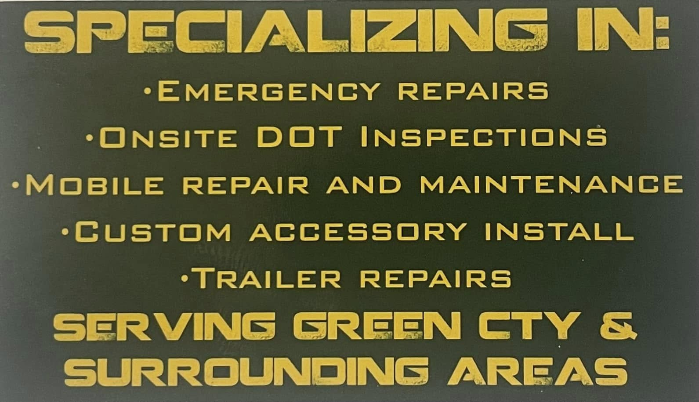

Emergency Repairs
Roadside and on-site repair for trucks, trailers, equipment, and fleet vehicles.
Services
Emergency repairs, onsite DOT inspections, mobile repair and maintenance, custom accessory installs, and trailer repairs across Green County and surrounding areas.
Ray's Own Service List
Roadside and on-site repair for trucks, trailers, equipment, and fleet vehicles.
Help keep your fleet compliant, road-ready, and prepared for inspection requirements.
On-site repair and maintenance to reduce downtime and avoid unnecessary trips to the shop.
Accessory installation for work trucks, trailers, and equipment setups.
Repair support for trailer brakes, lights, suspension, electrical issues, and more.

When a vehicle or trailer is down, call Ray directly. Mobile service helps reduce towing, delays, and downtime.
Inspection support for commercial vehicles and fleet operators who need practical, local help staying road-ready.
On-site repair and maintenance for work trucks, trailers, equipment, and commercial vehicle setups.
Trailer Support
Ray's supports trailer repair needs including brakes, lights, suspension, electrical issues, and general road-readiness. Call to discuss the problem and location.
Call for Trailer Repair